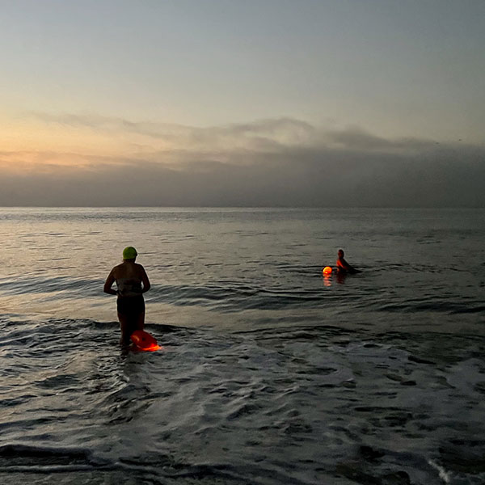

When people think of New York City, they often imagine skyscrapers, museums, restaurants and bars, or sprawling busy urban streets. It's important not to forget however, that this is a coastal city, comprised of five boroughs, with 520 miles of waterfront ("longer than Miami, Boston, Los Angeles, and San Francisco combined," chimes the NYC Department of City Planning website.)
At the southern end of Brooklyn in the neighborhood of Brighton Beach, open water swimmers train year round. Some intrepid swimmers even enter the water at twilight, using LED lights inside their swim buoys for illumination as the sun rises.
Brighton Beach is the home of the Coney Island Brighton Beach Open Water Swimmers (CIBBOWS), a 501(c)3 non-profit group dedicated to being a community resource for open water swimmers of all levels. As several members are experienced, long distance swimmers, CIBBOWS provides guidance and resources on training for swims across the English Channel, Manhattan Island Marathon Swim (MIMS), Long Island Sound, Catalina Channel and other challenging races. CIBBOWS offers three main activities: Group swims for the public, which are free; swim races for the public and club members; and water quality projects related to improving New York City's beaches, rivers and harbor.
Reference: https://www.openwaterpedia.com/wiki/Brighton_Beach